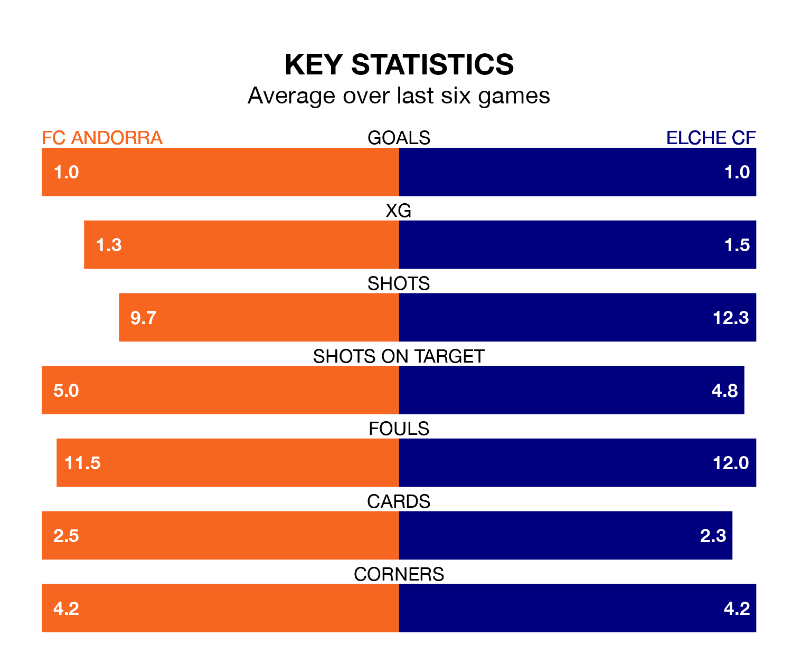

FC Andorra welcome Elche CF to Estadi Nacional on Sunday looking to pick up points to end their three-game losing streak.
Andorra's struggles have left them with five points from their last six Segunda División matches, while their opponents have earned eight from a possible 18.
Andorra are 20th in the table after 23 games, of which they have won six and drawn five, earning 23 points.
Elche are 11 places ahead of the hosts in ninth, with nine wins and seven draws putting them on 34 points.
With 21 goals in 23 games so far this season, Andorra are scoring at below the league average rate with 0.9 goals per game. And they are conceding more than average, letting in 32 goals at a rate of 1.4 per game.
The away team are also below average scorers, with 1.0 goal per game, compared to a league average of 1.2. They have also conceded 1.0 goal per game.
Andorra's last match was on January 20, a 2-0 loss against Real Zaragoza.
Elche drew 0-0 with Real Valladolid last time out, on Sunday.
Updated: 09:07 (UTC), 24/01/24